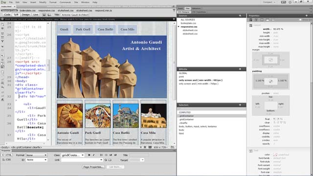

| LV: | 050063 PR Praktikum zu Knowledge Management im Bildungsbereich |
| Autor: | de Wilde, Jan (0703562) |
| Thema: | HTML5 |
Notepad++
 |
Hersteller: | Don Ho |
| Preis: | Free | |
| OS: | Windows | |
| Homepage: | notepad-plus-plus.org | |
| Beschreibung: |
|
| LV: | 050063 PR Praktikum zu Knowledge Management im Bildungsbereich |
| Autor: | de Wilde, Jan (0703562) |
| Thema: | HTML5 |
|
Hersteller: | Don Ho |
| Preis: | Free | |
| OS: | Windows | |
| Homepage: | notepad-plus-plus.org | |
| Beschreibung: |
|
 |
Hersteller: | Sublime |
| Preis: | 70$ (unlimitierter Download) | |
| OS: | OS X, Windows, Linux | |
| Homepage: | sublimetext.com | |
| Beschreibung: |
|
|  | Hersteller: | Adobe |
| Preis: | 23,99€ / Monat | |
| OS: | OS X, Windows | |
| Homepage: | adobe.com | |
| Beschreibung: |
|
 |
Hersteller: | Disruptive Innovations SAS |
| Preis: | 69,99€ (limitierte freie Version) | |
| OS: | OS X, Windows, Linux | |
| Homepage: | bluegriffon.org | |
| Beschreibung: |
|
| 1980 | Der bei CERN angestellte Physiker Tim Berners-Lee entwickelt das Hypertext Programm ENQUIRE um es den Mitarbeitern zu ermöglichen Dokumente zu teilen. |
| 1989 | Berners-Lee schlägt in einem Memo ein internetbasiertes Hypertext-System vor. |
| 1990 | Berners-Lee spezifiziert HTML und entwickelt Browser- sowie Server-Software dazu. |
| 1991 | Die este öffentlich verfügbare Beschreibung von HTML in Form eines Dokuments namens "HTML Tags" wird von Berners-Lee herausgebracht. Sie enthielt 18 Elemente die das initiale Design von HTML beschrieben. |
| 1993 | Der erste Vorschlag für eine HTML Spezifikation von Berners-Lee und Dan Connolly in einem Entwurf namens "Hypertext Markup Language (HTML)" veröffentlicht. |
| 1994 | Die Internet Engineering Task Force (IETF) gründete eine HTML Arbeitsgruppe. |
| 1995 | Mit "HTML 2.0" wird von der IETF Arbeitsgruppe die erste HTML Spezifikation veröffentlicht, die als Standard für zukünftige Implementationen dienen sollte. |
| 1996 | Das World Wide Web Consortium (W3C) übernimmt die Entwicklung und Standardisierung von HTML. |
| 2000 | HTML wird ein internationaler standard (ISO/IEC 15445:2000) |
| Version | Datum | Beschreibung |
|---|---|---|
| HTML | 04/1993 | Attribute für fette oder kursive Darstellung von Text und Bildintegration. |
| HTML 2.0 | 11/1995 | Die mit RFC 1866 definierte Version führt u. a. Formulartechnik ein. |
| HTML 3.2 | 01/1997 | Neu sind zahlreiche Features wie Tabellen, Textfluss um Bilder, Einbindung von Applets. |
| HTML 4.0 | 12/1997 | Einführung von Stylesheets, Skripten und Frames. |
| HTML 4.01 | 12/1999 | Ersetzt HTML 4.0 mit vielen kleineren Korrekturen. War lange Zeit Standard bis 2014. |
| XHTML 1.0 | 01/2000 | Neuformulierung von HTML 4.01 mit Hilfe von XML. |
| XHTML 2.0 | 07/2006 | Das W3C hat die Arbeiten an XHTML 2.0 im Sommer 2009 eingestellt, weil XHTML durch HTML5 ersetzt werden soll. |
| HTML5 | 10/2014 | Schafft auf Basis von HTML 4.01 und XHTML 1.0 ein neues Vokabular. Die zu HTML gehörende DOM-Spezifikation wurde ebenfalls überarbeitet und erweitert. |
| HTML 5.1 | 11/2016 | Aktuelle Version. |
HTML5-Dokumente beinhalten eine Dokumententypangabe in Form der Zeichenkette
Auf Versionierung wurde bewusst verzichtet, da HTML5 Rückwärtskompatibel ist und alle Elemente aus HTML 4.01 enthält.
| Auszeichnung zusätzlicher Inhalte, beispielsweise Abbildungen mit Bildunterschriften |
Zusätzlich zu den
| Definiert Navigationslinks (Menü) | |
| Definiert eine Sektion in einem Dokument | |
| Definiert einen Artikel in einem Dokument | |
| Definiert Inhalt abseits des Seiteninhaltes | |
| Definiert den Kopfbereich einer Seite/Sektion | |
| Definiert den Fussbereich einer Seite/Sektion |
| Definiert ein Datum / eine Zeit für dynamische Lokalisierung | ||
| Definiert eine mögliche Textumbruchsstelle in langen Wörtern | ||
| Definiert Ruby-Annotierungen zwecks Darstellung ostasiatischer Zeichen mit Hinweisen zur Aussprache | ||
| Definiert hervorgehobenen Text |
| Einbinden von Audio- und Video-Dateien erstmals ohne zusätzliches Plugin. | |
| Definiert eine Zeichenfläche, auf der mittels Sktipten zweidimensionale Bilder gezeichnet werden können. |
| Bildet den Fortschritt eines Prozesses ab | |
| Definiert einen messbaren Wert innerhalb eines gewissen Wertebereichs | |
| Spezifiziert eine Liste an vordefinierten Optionen für Eingabesteuerungen (beispielsweise Vervollständigungsvorschläge) | |
| Definiert ein Feld zur Generierung eines Schlüsselpaares für Folrmulare (forms) | |
| Definiert das Ergebnis einer Berechnung |
Das
| Der Inhalt des |
|
| Das |
HTML5 definiert einige neue Schnittstellen, die mittels JavaScript genutzt werden können um Webanwendungen zu erstellen:
| HTML Geolocation | Bestimmung der geographischen Position des Users |
| HTML Drag and Drop | Ziehen und Einfügen an einem anderen Ort von HTML5 Elementen |
| HTML Local Storage | Lokale Speicherung von Benutzerdaten als Alternative zu Cookies |
| HTML Application Cache | Zwischenspeichern von Daten im Browser für Offline-Zugriff, Geschwindigkeit und reduzierte Serverlast |
| HTML Web Workers | Ausführen von JavaScript im Hintergrund, ohne die Performance der Seite zu beeinflussen |
| HTML Server-Sent Events | Updates der Seite vom Server aus |
| Definiert die Wurzel eines HTML Dokuments | |
| Container für den sichtbaren Teil des HTML Dokuments | |
| Container für Kopf-Elemente, wie Titel, Skripts, Styles oder Meta-Informationen | |
| Definiert den Titel des HTML Dokuments im Kopfteil | |
| Definiert Überschriften | |
| Definiert eine thematische Änderung des Inhalts | |
| Definiert einen Paragraphen | |
| Fügt einen einzelnen Zeilenumbruch ein | |
| Definiert einen vorformatierten Text |
| Attribut um den Style von HTML-Elementen mit folgenden Eigenschaften festzulegen | |
| Hintergrundfarbe | |
| Textfarbe | |
| Schriftart | |
| Schriftgröße | |
| Textausrichtung |
| Definiert fetten Text | |
| Definiert hervorgehobenen Text | |
| Definiert kursiven Text | |
| Definiert kleineren Text | |
| Definiert wichtigen Text | |
| Definiert tiefgestellten Text | |
| Definiert hochgestellten Text | |
| Definiert eingefügten Text | |
| Definiert gelöschten Text | |
| Definiert markierten Text |